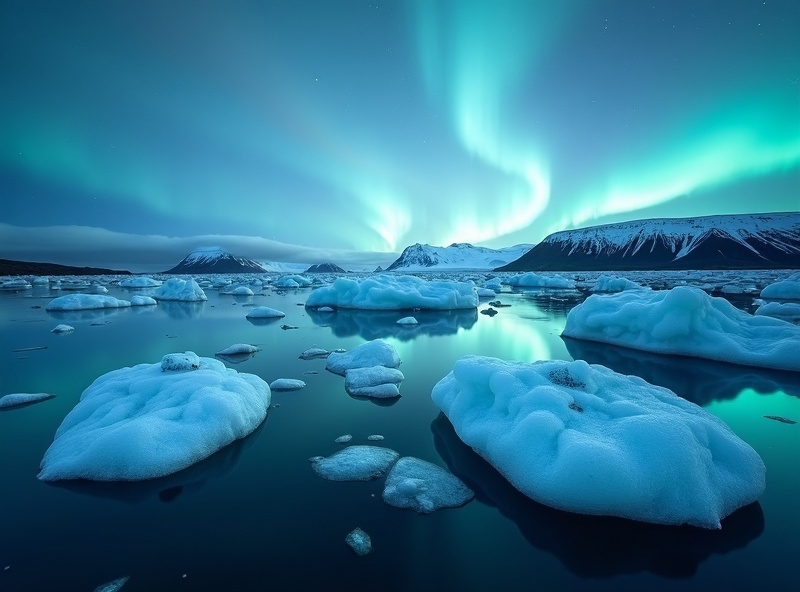
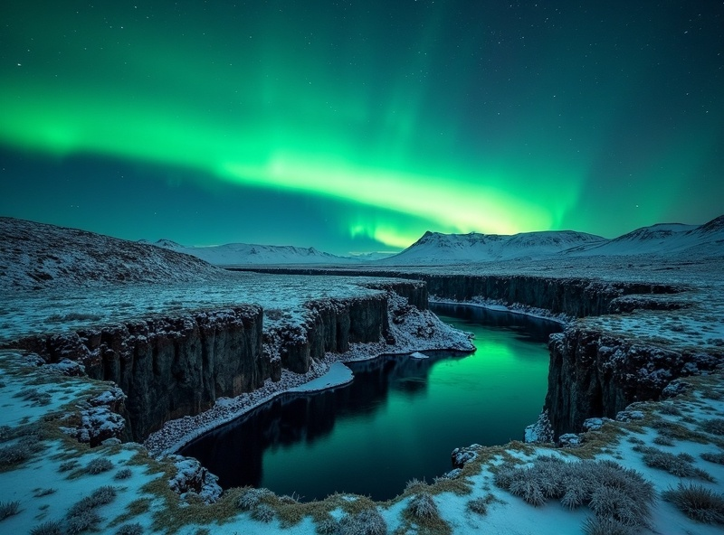
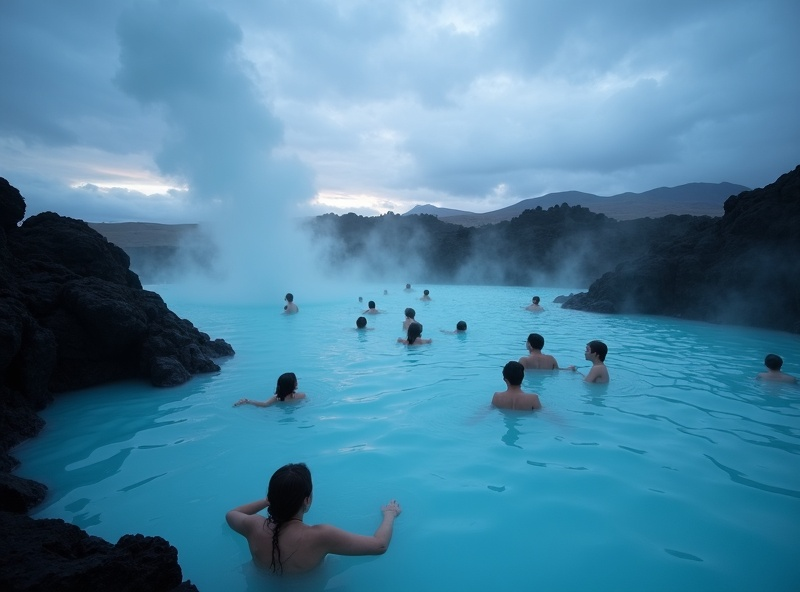

全球最佳極光觀測地
冰島地處極光橢圓環中心， 每年 9 月至隔年 4 月都是極光觀測旺季， 成功率極高。
OVERVIEW
冰島，地球上最接近月球表面的地方。 從雷克雅維克的溫泉蒸氣到南部海岸的黑沙灘， 從冰川潟湖的浮冰到極光女神的午夜之舞—— 這是片由冰、火、與光交織而成的超現實之境。 Aurora Travel 的冰島極光行程， 帶你走進世界頂級極光觀測地， 在寧靜的熔岩原上等待綠色簾幕降臨。
冰島地處極光橢圓環中心， 每年 9 月至隔年 4 月都是極光觀測旺季， 成功率極高。
冰川、火山、瀑布、溫泉、間歇泉—— 冰島地貌之豐富， 每一天都是視覺饗宴。
極光配冰河湖倒影， 或極光映黑沙灘—— 構圖層次超越其他北歐國家。
地熱供暖、藍湖溫泉、雷克雅維克精緻美食—— 極地之旅行還能如此舒適。
MUST VISIT

景點 1
漂浮著千年冰川的冰川潟湖， 冬季湖面映照極光時， 宛如置身異星世界。 是冰島最著名的極光拍攝點之一。

景點 2
世界文化遺產，也是歐美版塊分裂的裂谷所在地。極光深夜在裂谷上空舞動時，大地像是裂開了一道光之門。

景點 3
在乳藍色的地熱溫泉中，頭頂是冰島冬夜星空，幸運時還能在泡湯同時觀賞極光，冰與火的極致對比體驗。
9 月～隔年 4 月
島嶼海洋性氣候，多變且濕冷。 冬季平均 -3°C ～ 5°C， 夏季 7°C ～ 15°C
冬季白天約 0°C ～ 4°C， 夜間 -5°C ～ 0°C
TRAVELER STORIES
「第一次親眼看到極光那晚，我在冰島的黑沙灘上完全說不出話。 Aurora Travel 幫我安排的節奏很棒，從行程到住宿都有巧思。」

Emily Chen
「他們的極光追蹤團真的很專業，領隊會即時掌握 KP 指數， 還教我調攝影機參數，我拍到人生第一張爆發極光！」